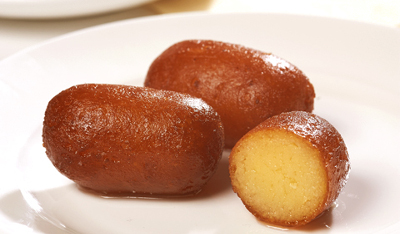
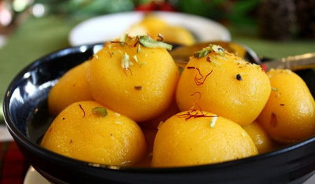
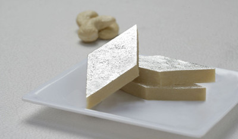
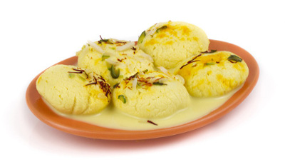

 Gulab jamun is a milk-solid-based South Asian sweet, particularly popular in India, Myanmar, Nepal (Where it is know as Lalmon), Pakistan and Bangladesh. It is made mainly from milk solids, traditionally from freshly curdled milk. It is often garnished with dried nuts like almonds to enhance flavour.
 Rajbhog is a variant of kesar rasgulla stuffed inside with dry fruits and khoa.
 Kaju katli also known as kaju Katari or kaju barfi, is an Indian dessert similar to a barfi. Kesar kaju katli is a kaju barfi recipe that inclueds saffron. The kesar version of this sweet dish is considered to be more exotic and rich.
 Rasmalai is a dessert originating from the Indian subcontinent. The name ras malai comes from two words in Hindi; ras, meaning "juice", and malai, meaning "cream". It has been described as "a rich cheesecake without a crust". The sweet is of Bengali origin; according to K.C. Das Grandsons, it was invented by K.C. Das.
Copyright © 2017 Food king. All rights reserved.